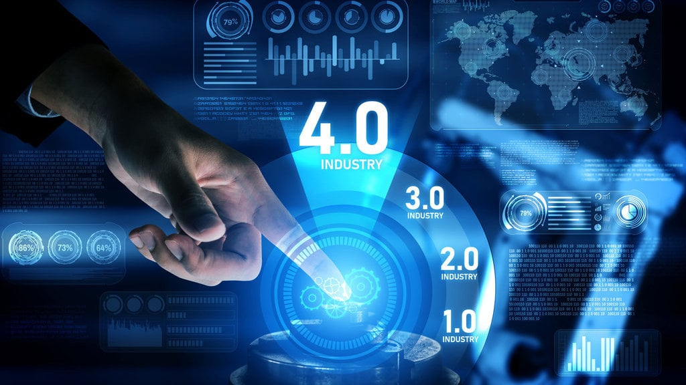

REVOLUSI INDUSTRI 1.0

Revolusi Industri adalah periode perubahan besar dalam sektor ekonomi, teknologi, dan sosial yang dimulai pada akhir abad ke-18 hingga awal abad ke-19. Perubahan ini ditandai oleh peralihan dari produksi barang secara manual di rumah atau bengkel kecil menjadi produksi barang menggunakan mesin dalam pabrik-pabrik besar. Revolusi ini pertama kali dimulai di Inggris dan kemudian menyebar ke negara-negara Eropa lainnya serta Amerika. Revolusi Industri mempengaruhi hampir semua aspek kehidupan, termasuk cara manusia bekerja, pola distribusi barang, serta struktur sosial dan ekonomi masyarakat.Untuk memutar penggilingan yang begitu berat, sering kali manusia menggunakan kincir air atau kincir angin. Masalahnya, manusia tak bisa menggunakannya di mana saja. Keduanya hanya bisa digunakan di dekat air terjun dan di daerah yang berangin. Tak hanya itu saja, tenaga angin juga tak bisa diandalkan 24 jam sehari. Ada kalanya benar-benar tak ada angin yang bisa digunakan untuk memutar kincir.
REVOLUSI INDUSTRI 2.0

Produksi memang sudah menggunakan mesin, tenaga otot sudah digantikan oleh mesin uap, dan kini tenaga uap mulai digantikan dengan tenaga listrik. Namun ada satu hal yang belum berubah, proses produksi di pabrik masih jauh dari proses produksi di pabrik modern dalam hal transportasi. Di akhir 1800-an, mobil mulai diproduksi secara massal. Namun, di pabrik mobil, setiap mobil dirakit dari awal hingga akhir di titik yang sama. Semua komponen mobil harus dibawa ke si tukang-perakit. Seorang tukang-perakit memproses barang tersebut dari nol hingga produk jadi. Dari awal hingga selesai, dari merakit ban, pintu, setir, lampu, semua hanya dilakukan oleh satu orang.Proses produksi ini pada akhirnya memiliki kelemahan besar, yaitu perakitan dilakukan secara paralel. Artinya, untuk merakit banyak mobil, proses perakitan harus dilakukan oleh banyak tukang secara bersamaan. Ini membuat setiap tukang harus diajari banyak hal, seperti memasang ban, memasang setir, hingga memasang rem.
REVOLUSI INDUSTRI 3.0

Setelah mengganti tenaga otot dengan uap, lalu produksi paralel dengan serial, lantas perubahan apa lagi yang bisa terjadi di dunia industri? Jawabannya ialah manusia. Revolusi industri 3.0 ditandai dengan adanya mesin yang bergerak dan berpikir secara otomatis, yaitu komputer dan robot. Hal inilah yang membuat revolusi 3.0 memiliki nama lain, yaitu Revolusi Digital. Pada bagian ini, peristiwa revolusi industri disebut perubahan karena lahirnya teknologi komputer menandakan cikal-bakal kemudahan kerja untuk manusia. Salah satu komputer pertama dikembangkan di era Perang Dunia 2 sebagai mesin untuk memecahkan kode buatan Nazi Jerman. Komputer ini menjadi komputer pertama yang bisa diprogram dan diberi nama Colossus. Berbeda dengan zaman sekarang, komputer ini merupakan mesin raksasa sebesar sebuah ruang tidur. Colossus adalah komputer yang tidak punya RAM dan tidak bisa menerima perintah dari manusia melalui keyboard, apalagi touchscreen. Komputer purba yang membutuhkan listrik sebesar 8500 watt ini hanya bisa menerima perintah melalui pita kertas. Penemuan semikonduktor, disusul transistor, lalu integrated chip (IC) membuat ukuran komputer semakin kecil, listrik yang dibutuhkan makin sedikit, sementara kemampuan berhitungnya terbang ke langit.
REVOLUSI INDUSTRI 4.0
Konsep “Industri 4.0” pertama kali digunakan di publik dalam pameran industri Hannover Messe di kota Hannover, Jerman di tahun 2011. Peristiwa ini pula yang melahirkan penyebutan “Industri 2.0” dan “Industri 3.0”. Pasalnya, sebelumnya hanya dikenal dengan nama “Revolusi Teknologi” dan “Revolusi Digital”. Sejatinya, revolusi industri dikatakan revolusi karena terjadi secara perlahan-lahan dan mengalami perkembangan yang cukup signifikan. Pada industri 4.0, perubahan mendasar juga menggunakan komputer dan robot. Perbedaan dengan revolusi-revolusi sebelumnya, revolusi industri 4.0 merupakan perpaduan kemajuan dalam kecerdasan buatan (AI), robotika, Internet of Things (IoT), pencetakan 3D, rekayasa genetika, komputasi kuantum, dan teknologi lainnya. Maka bisa didefinisikan, revolusi industri 4.0 sebagai cara untuk menggambarkan kaburnya batas antara dunia fisik, digital, dan biologis. Hal pertama dari peristiwa revolusi industri 4.0 yang paling terasa adalah internet. Semua komputer tersambung ke sebuah jaringan bersama. Komputer juga makin kecil hingga bisa menjadi sebesar kepalan tangan manusia. Tidak hanya tersambung ke jaringan raksasa, orang-orang di dunia turut tersambung ke jaringan raksasa tersebut. Inilah bagian pertama dari revolusi industri keempat, yaitu “Internet of Things”.